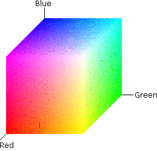
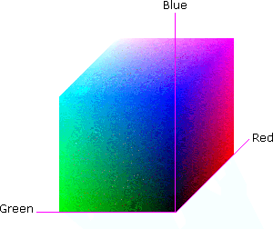

title: RGB Color Spaces description: An RGB color space is created by mapping the colors red, green, and blue onto a 3-D Cartesian coordinate system. ms.assetid: fbe00c2a-700f-4905-a67a-47e3fd2bfa5c keywords:
An RGB color space is created by mapping the colors red, green, and blue onto a 3-D Cartesian coordinate system. This results is a 3-D cube like the ones shown in the following figure. This figure displays the same RGB cube from two different angles. Notice that the origin of the coordinate system is black. This is where the red, green, and blue (RGB) color components are all 0.0. The diagonally opposite corner of the cube is white, where the RGB color components are at their maximum value.


Like most color spaces, the RGB color space is normalized. That is, all color values are restricted to the range of zero to one inclusive. So black is (0.0, 0.0, 0.0), and white is (1.0, 1.0, 1.0).
In the RGB color space, the primary colors are red, green, and blue. The secondary colors are cyan, yellow, and magenta.
RGB color spaces can be device dependent or device independent.
Â
Â